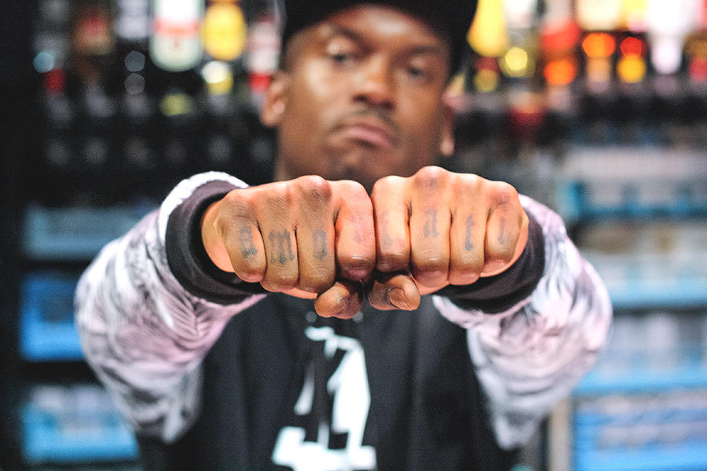
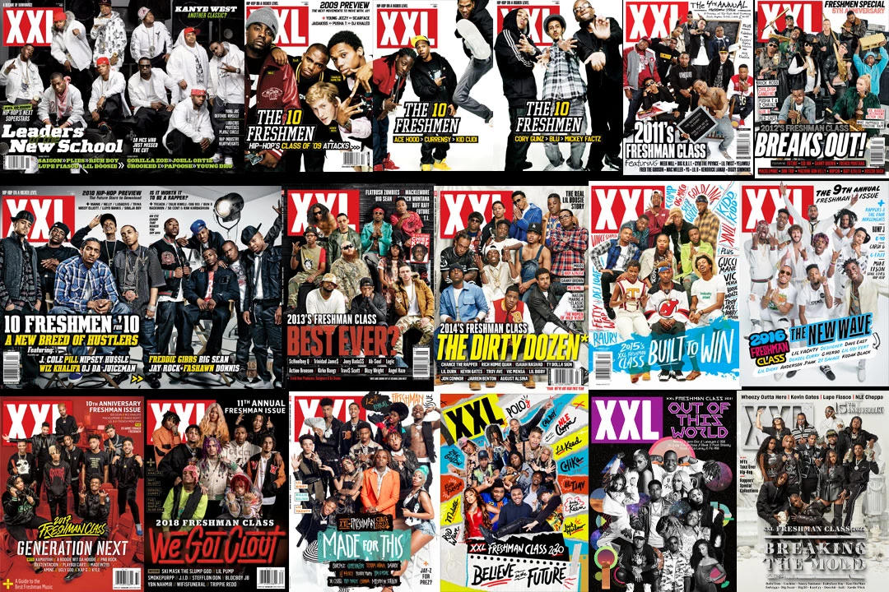
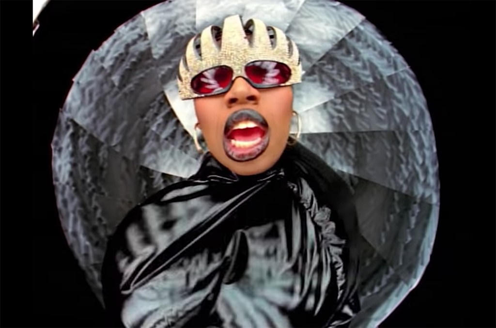
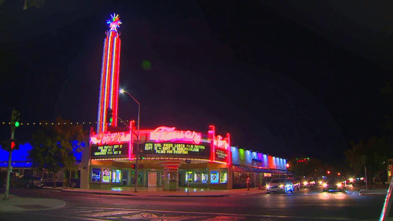
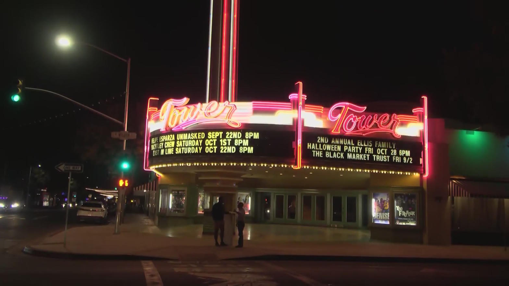
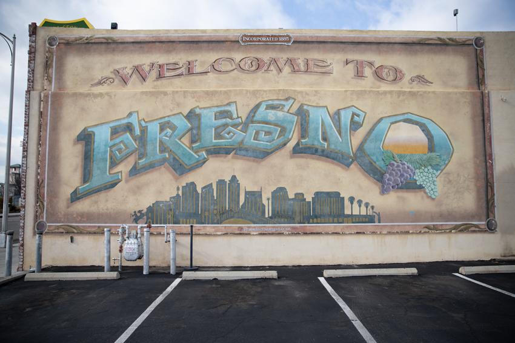
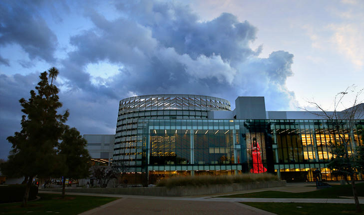
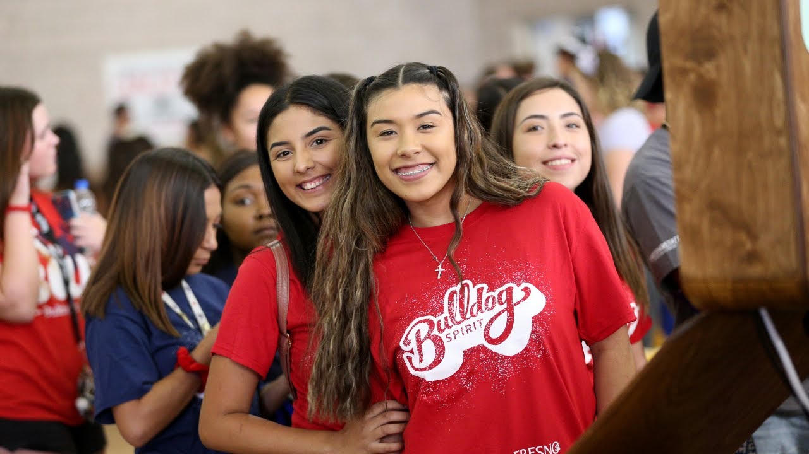

Talent. Hustle. Loyalty.
That is the last line on the cover, printed under her name like a motto instead of a slogan. Fresno has produced nationally recognized MCs. It has also produced a long list of working artists who never got a magazine that treated them like the center of the frame. This cover does that work. Whether SNO is a street-level zine, a one-issue statement, or a local media flex, the composition is doing something specific: it is staging a woman from the 559 as empire, not as featurette.
Who is actually on the cover
Nephateri is a hip-hop artist born in Merced and raised in Fresno. Public artist notes are unusually concrete for an independent MC. She came out of a strict household that put school first. She earned a B.S. in Business and Entrepreneurship from Fresno State, then an MBA with an accounting emphasis from the University of Phoenix. Music was already there. She started writing with her mother at twelve. In high school she was in a girl group called Momentum. After the degrees, she went full throttle.
The catalog is real and public. EP traction arrived with The Assassination in 2020. The debut album The First Supper dropped in 2022. Singles include "Drip," "Queen Shit," "Get Ready," "Ballin," "On Top," then later "Rebel," "Know Me," and "Suicide Floss." She has been listed as working a sophomore album titled Paroxysm. Booking runs through Delphine Necole Entertainment. On older SoundClick pages she is also "Nefa," a producer who said out loud that she wanted to break the mold of famous guy producers.
Streaming numbers on the public profiles are small. That is part of the significance, not a reason to look away. The cover is not claiming Billboard. It is claiming the city.
Why a Fresno cover still has weight
Fresno sits between two gravitational fields. Los Angeles exports the industry version of California rap. The Bay exports the regional dialect that the rest of the country learned to imitate. The Central Valley has to invent its own circulation. That is why local media, cyphers, bar stages, and one-issue magazines matter here more than they matter in cities that already have XXL and a booking circuit.
The national names from this soil are mostly men. Fashawn went from the south side to an XXL Freshman class that also held J. Cole and Wiz Khalifa, the only unsigned freshman on that cover at the time. Planet Asia carried lyricist weight out of Fresno into Cali Agents and a long underground run that critics still call underrated. Killa Tay helped define the 90s Valley gangsta register. Shake Da Mayor, Baeza, Fay3hunnit, Bankroll Raedoe, Yvnng Ecko and others keep the current underground loud.
A cover that says "best rap artist in Fresno" and then prints a woman's name is intervening in that lineup. It is not asking permission from the Bay or from LA. It is printing the 559 on the barcode and daring the city to argue.


The glasses are not decoration
Oversized jeweled frames on a black field are a known hip-hop signal. Missy Elliott spent a career turning costume into command. The SNO cover borrows that grammar: you cannot see the eyes clearly, so you have to deal with the stance. Queen energy without asking if the room is ready.
Nephateri's own catalog already uses that language. "Queen Shit" is not a casual title. The Linktree copy calls her Queen Neph. The cover just puts the crown in rhinestones and photographs it like a product shot for a throne that does not exist yet.

The 559 as setting, not backdrop
The cover copy is almost a map. "Representing the 559." "Building an empire from the ground up." "Fresno's hottest scene. Rising stars to watch. Local legends. Fashion. Events. Culture." That is Tower District language even when the photograph is a studio black void.
The Tower Theater neon is the city's most honest billboard. It has always advertised more than movies. It advertises that this neighborhood still believes a marquee can make a night matter. Venues like Strummer's keep the live circuit alive when the national tour skips the Valley or treats it as a gas stop between Sacramento and Los Angeles.



Education as a West Coast flex
A lot of rap biography treats school as the thing you escaped. Nephateri's public story refuses that script. Fresno State first. MBA second. Then the records. That sequence is Central Valley to the bone. This is a working city. Degrees are survival gear. Putting an MBA on the same page as "Queen Shit" is not a contradiction here. It is the point.
Fresno State has its own hip-hop memory. The Straight Outta Fresno archive documented popping, b-boying, and the multi-ethnic crews that practiced in southeast parks and community centers. Campus rooms hosted Urban Combat jams. The university is not only a degree factory. It is one of the places the culture learned it was allowed to be studied without being sanitized.


Stormalatte and the homemade press
The byline on the cover is Stormalatte. Public traces point to an independent 559-adjacent creator running freestyles, late-night hyphy shows, and a small YouTube lane under Stormalatte Gator Empire. That matters. The cover does not arrive on coated stock from a Manhattan masthead. It arrives from the same ecosystem that still has to photograph itself if it wants to be seen.
Independent Valley coverage has always been patchwork. Bang West, Siccness, Thizzler, local YouTube channels, Facebook live, one-off flyers. A designed magazine front is a level-up of that same instinct. It borrows the authority of XXL and Source without waiting for either one to send a writer to Olive Avenue.
What the cover is really selling
"The voices. The movement. The takeover." That is standard magazine heat. The more honest lines are lower on the page. Exclusive interviews. Behind the music. Real stories. Real people. Building an empire from the ground up.
Ground up in Fresno is not a metaphor. It is farmland at the edge of the city, vacant storefronts on the same blocks as neon, and artists who keep releasing while monthly listener counts stay in the single digits. The cover is a bet that local legend is a job title you can assign before the algorithm agrees.
Closing
A magazine cover is a spell. It says this person is the one to watch, then waits to see if the city repeats it. Nephateri already did the unglamorous chapters: twelve-year-old writer, girl group, two degrees, independent singles across half a decade, a label name with her own initials in it.
The jeweled glasses are the poster. The significance is the insistence. Fresno does not get many official coronations. When someone prints BEST RAP ARTIST IN FRESNO across a woman's portrait and barcodes it 559, the correct response is not to fact-check the superlative like a clerk. The correct response is to listen to the records, look up the dates, and decide whether the city is going to treat its own cover stars as disposable graphics or as unfinished business.
Representing the 559. Building an empire from the ground up.
Sources
- Nephateri official Linktree
- Nephateri on Spotify (bio, The First Supper, singles)
- Nephateri on Apple Music
- Nephateri on SoundClick (early bio, Momentum, producer notes)
- Bang West: Fresno Hip-Hop Past, Present, and the Voices Defining the 559
- Fresno Bee: The ecology of Fashawn
- Straight Outta Fresno archive (Fresno State / Valley Public History)
- Tropics of Meta: Fresno Climax Crew
- Kulture Vulturez: Central Valley rappers
- Cover image: user-supplied SNO Magazine June 2026 front, by Stormalatte, featuring Nephateri.